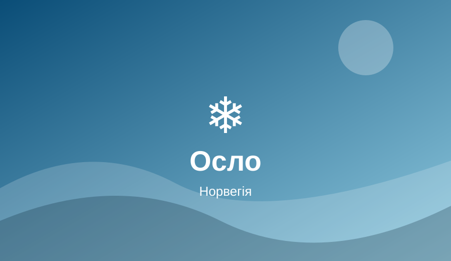
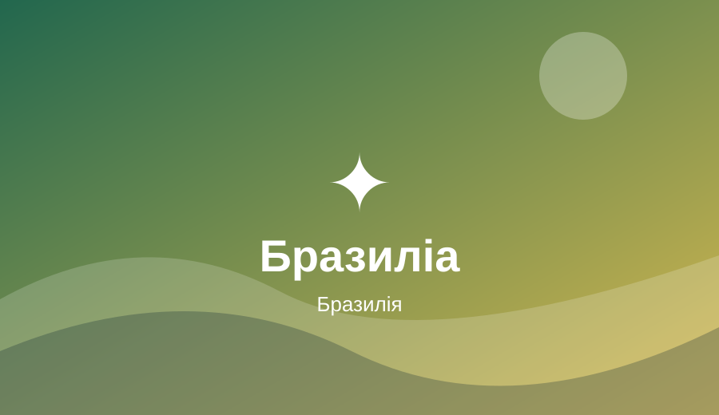

Осло, Норвегія
Осло приваблює поєднанням спокійного міського життя, зелених просторів і близькості до Осло-фіорду.
Мої три найкращі міста світу · Столяр Олег · МТ-41
Вітаю у моєму навчальному блозі про три міста, які хочеться побачити: північне Осло, історичні Афіни та модерністську Бразиліа. Тут зібрано найцікавіші місця, місцеві страви й культурні особливості.

Осло приваблює поєднанням спокійного міського життя, зелених просторів і близькості до Осло-фіорду.

Афіни захоплюють тим, як пам’ятки давнини живуть поруч із сучасними вулицями й кафе.

Бразиліа вражає незвичними формами будівель і задумом міста, спроєктованого як столиця.
Перегляньте галерею, напишіть нам через контактну форму або підпишіться на новини.